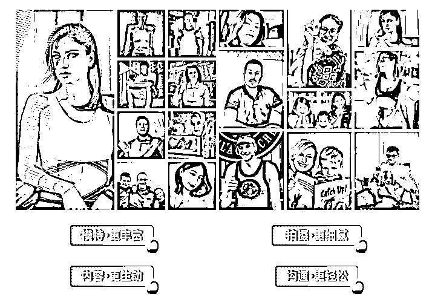
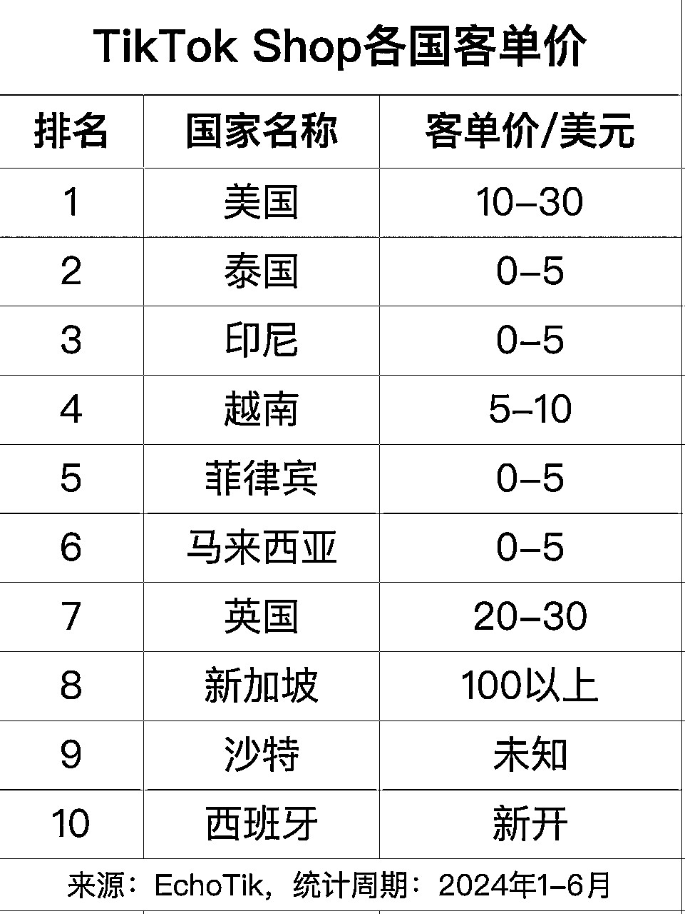
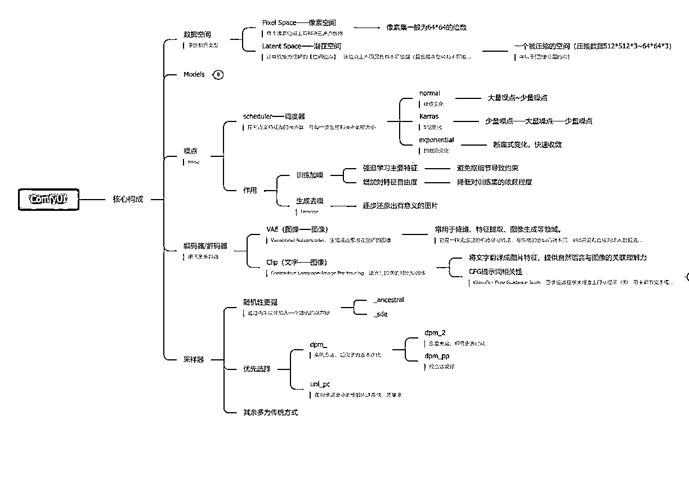
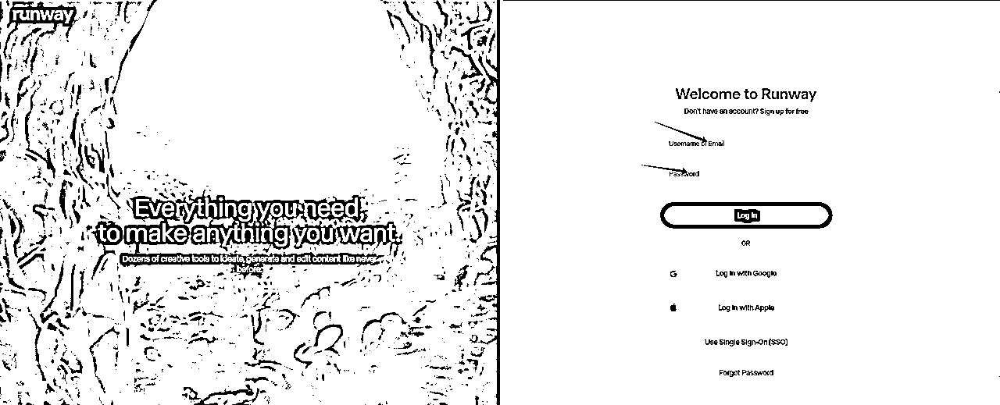
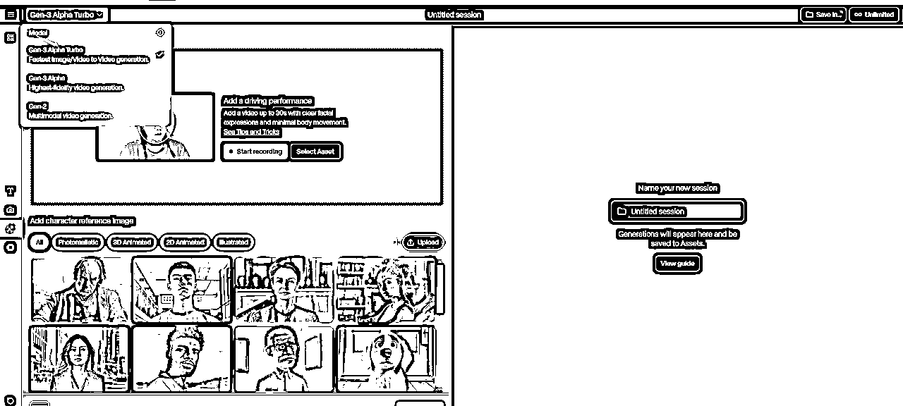

来源：https://xa06j6z232m.feishu.cn/docx/JxWxduUFhoN2z9xA8eocqwKBnwb
大家好，我是 Lisa , 90后福建人在深圳创业，深耕跨境领域3年，目前all in AI+出海赛道。
现在正是AI的时代，因为这个契机我把 AI 深度结合在了跨境领域，现在跑通了 AIGC+跨境电商的变现模型，这个市场需求太大了！今天我就把整个变现模型和实操方法分享给大家，希望更多人能实现 AI+出海，别墅靠大海！
之前写了一篇关于"一个传统媒体人的 AI 跨境逆袭之路"的帖子，吸引了很多朋友的关注，大家都很期待让我出一篇实操的帖子，今天我就出一篇以 “AIGC原创短视频带货赚美金” 的保姆级实操帖，让小白也可以轻松入局跨境电商，一起出海赚美刀。
第一篇帖：
经历了国内短视频、直播的时代，大家应该都清楚，短视频、直播是这个时代最大的红利，因此造就了很多草根逆袭和翻身的神话，但是国内的红利已经渐渐退去，现在只剩下存量市场的博弈。而海外，短视频直播时代才刚开始。
三年前我们刚开始入局TiKTok的时候，那时候整个平台都非常缺乏内容，所以几乎没什么管控，那时候很多人就纯搬运赚创作者基金都赚得盆满钵满。对带货短视频的管控也是很随性，货不对板，非原创都不是问题。
但是虽然早期管控不严，那时候入局的玩家也承担了早期教育市场的责任，海外用户连小黄车购买都不太懂，都需要各种文字、箭头引导。
但是到了现在，随着平台及海外市场的不断成熟，管控也开始越来越严了，包括曾经风靡的混剪带货在很多国家都不行了，尤其美区，混剪几乎行不通，只能原创。
而且最重要的是，海外短视频原创难度系数是很大的，因为你没有海外模特，没有海外场景。所以催生出了非常多海外代拍这样的产业。

但是海外代拍价格是比较贵的，而且整个拍摄周期也很长，这样就导致了这种模式只有一些大的卖家在使用。而且这种形式很难去做到量化和放大。以下是某家海外代拍公司的服务价格：
所以现在整个TiTok,尤其是美区，商家自营短视频的占比非常小，在TikTok美区小店GMV占比中，达人视频带货占比高达80%，广告占比约15%，直播占比约5%。
所以整个市场就形成了海外达人“卷”的形态，因为目前海外商家多，达人少，给达人的佣金不仅越来越高，而且整个市场都是在抢达人的状态，甚至很多达人都开始收坑位费了。
这也就意味着商家自营账号将会成为趋势，其实也就是国内抖音的路径再到海外走一遍，所以我觉得：AI来了，跨境电商原创短视频的机遇真正来了！
看过我第一篇帖子的伙伴应该都知道，我最开始做 TikTok,做了300个带货账号，基本上都是用短视频混剪的方式。这种方法虽然高效，但是也会有两个弊端。
首先，短视频素材会受到面孔限制。所以我之前主要做的大部分是东南亚的账号。因为东南亚的长相跟国内相似度比较高，所以用国内的带货素材没有什么问题。但是做欧美就不行了，面孔差异太大，不仅平台推流会优先推给亚裔国家，而且短视频不够本地化也会影响用户购买的信任度。
其次，短视频风控越来越严。短视频混剪在很多地区原创审核过不去，尤其美区。
所以我开始测试AI原创短视频带货路径，测试了几个品，多个账号都陆陆续续出单了，有些账号的单品还爆了100单。
而且很多人表示根本看不出来这个短视频是AI，真实度和自然度都还是很不错的，因为现实中你根本就没办法去请这些小外模。
在美区我们也尝试做了虚拟网红的账号，打造我们自己的健身博主sophia，一条2万多播放的视频就涨了1000粉，吸粉率还是很不错的。后期账号就可以带健身相关的产品。虚拟网红不仅不用担心达人红了之后的稳定性问题，而且还省了拍摄成本，我觉得未来会成为短视频领域的一个趋势。
方法论跑通后，越来越多的跨境卖家来找到我们，都表示有巨大需求，因为原创短视频是大家目前共性的痛点。前两周某跨境上市公司也找到我们，体量这么大的企业在原创短视频方面也是有着巨大痛点和需求。
于是他们就邀请我和锦哥给短视频部门做了一场AI短视频的内训，我就把整个短视频的方法论复制给了他们，他们也开启了AI原创短视频的带货之路。之前他们请外模，一个小时就要1000元，所以AI短视频的解决方案不仅能降本，还能增效。
以兴趣电商模式起家的TikTok，正在复制国内抖音的成功（年GMV已超2万亿元），受到广大商家的追捧，并涌现出一批亿级卖家（官方称为“亿元俱乐部卖家”）。
现在想要做TikTok,无论你是达人还是商家，短视频都是个“必选题”。因为作为内容电商首个成功出海的平台，TikTok是兴趣平台，电商一定要叠加上“兴趣”的属性。而且目前整个海外市场直播带货还不是很成熟，整个平台的GMV，70%是来自于短视频带货。
由此可见，短视频带货在海外市场的机遇是巨大的！
今年，TikTok电商同样保持着高速增长。据知情人士透露，TikTok Shop前三季度GMV可能已经超过去年。
从国家来看，在TikTok Shop已开通的10大站点当中，美国的表现最为亮眼。今年上半年，美国GMV占比已达24%，在所有国家站点中排名第一，泰国和印尼紧随其后，而此前被看好的英国仅占4%。

很多人都想做美区市场，因为毕竟赚的是美金，客单价也比较高。尤其现在特朗普大选成功后，特朗普放话不会封禁TikTok,很多人悬着的心终于放进了肚子里。
毕竟特朗普自己的 TikTok 账号，至今已经有了 1410 万粉丝，可以说是 TikTok 上涨粉最快的网红之一。他这次的成功在一定程度上来说TikTok功不可没。
所以美区的市场当然是毋庸置疑的，但是对于普通小白而言，我还是建议大家先选择东南亚市场，等跑通了0-1再考虑扩展到美国。因为美区虽然市场大，但是门槛也高，对于小白入局不是那么友好。
目前可以开通橱窗带货的国家有：美区、英区、东南亚六国（马来西亚、印尼、新加坡、泰国、越南、菲律宾）
美区。
目前，美区需要5000粉才可以开通橱窗，之前东南亚国家除了印尼需要2000粉，其它国家都是1000粉。但是最近东南亚有一些变动，目前可能很多人都还不知道。
令人惊讶的是，印尼和菲律宾现在只需要600粉就可以开通橱窗了，这个门槛真的是非常低了。
印尼突然把门槛放得这么低估计跟上次封禁TikToK有很大关系，上次三个月的封禁流走了不少卖家，现在这个门槛应该是想把大家都召唤回来吧~
我一直作为一个短视频一线的剪辑人员，以我的亲身经历来说，我都是建议大家：首先一定要选择一个自己喜欢或者热爱的类目。
因为除了出单之外，你每天大部分的时间都是花在素材和剪辑之上，如果你不喜欢这个类目，剪辑起来也会相当痛苦，也许就很难撑到曙光到来之日了！
有兴趣，才有动力，比如喜欢美妆，就可做美妆视频，喜欢服装，就做服装品类。
除了兴趣这一个指向之外，还有很重要的一点就是要根据你自身的资源优势去选择类目。比如你在国内有一些工厂资源或者家族行业资源，以后也准备出海的。那就可以提前根据这个类目去做布局，率先跑通0-1对于以后的产品出海会更有优势。
或者你有一些已经出海的资源，可以拿到一个比较好的佣金比例，那你也可以选择这个类目。因为在精选联盟里的佣金比例都会比较低一些，只有一些商家给的定向链接才能拿到比较高的佣金。
很多人都说，海外的佣金跟国内的比实在是太低了，国内低于30%都没有达人愿意带。而海外普遍在5%—20%，感觉很多根本就是在捡钢镚。
其实，那是因为你没有找到好的货盘主，像我们做了几百个矩阵账号之后，很多商家都会找我们，佣金比例很多都能给到30%。
所以无论选择做哪个行业，你都需要积累。因为现在海外整体的趋势就是：不缺商家，但是缺会带货的人。所以海外达人就算是视频拍得很烂，只要能出点单，也都是被疯抢。
根据市场需求去选择：一种是根据排行版，看TiKToK上什么类目需求量最大，俗称“跟品”，大类目意味着市场受众面大，出单容易但是意味着竞争也很激烈，很难独占鳌头。
还有一种方法就是：Tik Tok缺什么内容？就去做什么内容，蓝海起步，但此方法也有缺点，无法借鉴同行，同时也不好判断海外用户是否喜欢这类内容，这个品类。但同样风险与机遇并存，成功就是大IP。
第一个吃螃蟹的人往往是受益最大的！
还有一种就是根据现在AIGC的技术水平：因为我们主打的是AIGC原创短视频带货，目前AIGC原创短视频的成熟度还不能覆盖每个类目。
目前以我们测试出来的案例来说，服装、宠物用品、车载用品都是效果比较好的赛道。
整个TikTok平台对非原创性内容风控升级，所以以前的混剪方案大部分行不通，东南亚还稍微好一些，但也有被扣分的风险。尤其是美区，混剪是完全不行了。而且就算你是原创拍摄的，你的镜头重复使用后，都有可能被判重。
只要你一旦挂上小黄车，你的视频就会进入非常严格的审核池，一旦发现有判重，小黄车就会被下掉，同时被扣分。
整个橱窗总分24分，违规第一次，被扣8分，橱窗封禁1天；违规第二次，再被扣8分，橱窗封禁3天；违规第三次，橱窗永久封禁。
所以现在美区大部分商家都是拿样品自己拍摄，每天的拍摄量就是极大的。而且大部分都是纯拍产品，因为找不到外模出境。
在国内请外模拍摄是比较难也比较贵的，在北上广深这些一线城市可能还能找到一些外模，在一些三四线城市就根本没有。我记得当时我们在福州，想找一个外模和主播非常困难，只有在大学里找到一些留学生，价格还不便宜。
还有很多商家就直接寄样到海外去拍摄，拍摄一次几百美金，除了贵，寄样拍摄完成寄回来，2个月时间就过去了，性价比是很低的。
而且现在海外达人拍摄的质量都比较低，因为他们都不太懂什么是短视频，所以很难根据你的指令完成你所需要的拍摄。
这样算下来，整个短视频的制作成本就很高。样品费+达人拍摄+剪辑团队，除了整个周期比较长，成本也很难下来。
所以 AI 的出现，我觉得会把所有中间环节都去掉，只剩下一个短视频制作成本，而且能做到全部原创，这样不仅解决了平台风控问题，还能解决外模拍摄的痛点。
我觉得AI原创短视频未来会成为跨境电商市场的一个刚需，在国内由于拍摄成本很低，原创拍摄一条短视频只需要几十块，所以目前还很难取代国内的短视频制作。但是跨境电商行业就不一样了，本身居高不下的成本就是市场目前的一个刚需。
带货短视频的结构一般比较简单，只要把内容结构梳理好，展示清楚，就能激发大家的购买欲望。可能因为我本身是广电出生，所以很重镜头语言的表达。
我经常给大家说得最多的一句话就是：能用镜头展示的就不要用文案！
因为最好的短视频就是可以通过镜头把一件事或者一个产品描述清楚，让用户可以直接产生购买欲望。
最实用的结构就三个部分：黄金三秒开头+爆点内容+共鸣结尾，中间的部分可进行一定的延展
以下是一个带货短视频脚本结构的表格示例：
| 序号 | 部分 | 内容描述 | 备注/提示 |
|---|---|---|---|
| 1 | 开头（Hook） | 吸引观众注意力，如使用问题、惊人事实或引人入胜的故事开头。 | 确保在前3-5秒内吸引观众。 |
| 2 | 介绍（Introduction） | 简短介绍产品和视频目的。 | 保持简短，直接进入主题。 |
| 3 | 产品展示（Product Showcase） | 展示产品特点、使用方法和效果。 | 使用高清图像和清晰的解说。 |
| 4 | 优势强调（Highlight Benefits） | 强调产品的主要优势和卖点。 | 让观众了解为什么需要这个产品。 |
| 5 | 用户评价（Customer Reviews） | 展示真实用户的评价和反馈。 | 增加可信度。 |
| 6 | 价格和优惠（Price and Offers） | 明确产品价格，并提供任何特别优惠或促销信息。 | 突出价格优势或限时优惠。 |
| 7 | 购买指南（Purchase Guide） | 提供购买链接、步骤或其他购买相关信息。 | 确保信息准确无误，方便用户操作。 |
| 8 | 呼吁行动（Call to Action, CTA） | 鼓励观众采取行动，如“立即购买”、“不要错过”。 | 明确告诉观众下一步应该做什么。 |
| 9 | 结尾（Conclusion） | 总结视频内容，再次强调产品优势。 | 可以是一个强有力的结束语或一个行动呼吁。 |
| 10 | 尾声（Outro） | 视频结束部分，可以包含感谢语、品牌标识展示或预告下一个视频。 | 保持简短，强化品牌印象。 |
制作一个好的短视频脚本结构最好的方法就是去拆解爆款，然后1:1复制。大家做短视频的一个误区，不要一上来就想着自己去创新，做原创。
因为你靠主观性想象出来的一定没有平台大数据跑出来的数据精准，平台已经判定是好内容的一定有它的算法逻辑，你就跟着这个算法去模仿一定不会有错。
而且每个平台都会有差异性，比如有一些比较爆的视频和品在国内可能数据很好，但是放到海外的平台上就不行，因为每个国家地域都会有文化差异，喜好会有所不同。
尤其是做海外市场，一定不能站在我们国人自己的立场上去思考脚本，一定要用当地的爆款脚本去拆解并且仿制，因为我们要的是确定性结果，而不是偶然性。
脚本确定好以后，我们接下来要做的事就是给脚本的分镜去出图了。出电商图对很多人来说可能会有一定难度，现在市面上最强大的电商出图软件应该就是 Comfy ui 了，但是它对电脑配置以及专业性要求比较高，没有学习个几个月估计很难上手。

学习周期太长对于小白们肯定不太现实，大家不要慌，我接下来会给大家分享一款做跨境电商非常实用的电商工具，小白3分钟就可以上手。价格也不贵，一个月几十人民币，新号都会赠送一些免费积分，主要是极大的省了我们的时间，提高了效率，主要是效果也很好。
这个工具的底层应该也是Comfy ui,只是把很多工作流给我们搭好了，操作界面也比较简单。以下是工具链接，直接注册登录就可以使用了，网页端操作解决了电脑配置的问题。
注册使用链接：https://linkfox.com/?channel=hujing
如果你做的是服装赛道，那你就可以使用“AI穿衣”、“真人换模特”、“人台换模特”以及“一键换色”等功能。如果是其他产品，就可以用“场景裂变”、“商品替换”等功能。
下面我用TiKTok精选联盟里的服装举个案例：
比如我想卖精选联盟里的这件连衣裙，那我就可以直接把这个图片保存下来：
然后把图片上传到网站上，选用“AI穿衣”的功能，首先会进行自动抠图，不管是白底还是复杂的背景，都可以抠干净，如果抠得不满意，还可以自己进行微调。

然后选择自己想要的模特进行AI穿衣，网站上有很多不同的外模可以选择，你也可以自己上传自己的参考图，还是比较灵活的。
然后就会自动生成四张图片供你选择，效果还是非常自然的，选好图片下载下来就可以。
看看下面的高清成品图，系统还会自动配上不一样的配饰。
如果想要全身图片，就可以选择相应的模特去换衣就可以。
还有如果这个服装有好几个颜色，就不需要一直用新的图片去生成，只需要选择“一键换色”功能即可，可以根据各种参数调整成服装原本的颜色，基本没有什么误差。
这个功能也是非常实用，对于有很多颜色SKU的产品来说，实在是太方便了。
除了服装，其它很多赛道都可以，下面就是我生成的一个宠物用品的图片成品。
出完产品图片以后，就到了生成视频的步骤了。生成视频的话目前runway和可灵效果会比较好。
但是由于我们做的是跨境电商，用到的基本都是外模，所以基本上用runway效果会更稳定，因为它的大模型毕竟是国外的，训练外国人的面孔会更多。
runway登录链接：https://app.runwayml.com/login

runway月版无限生成的价格不便宜，要95美刀。所以我一般都是去某宝直接购买共享账号，大概75元/月。商家给了账号密码直接登录就可以用了。
选用最新的Gen-3 Alpha Turbo 模型，效果最好而且可以支持竖版的视频（短视频基本都用9:16比例）

然后上传你需要生成视频的图片，在方框处输入提示词（需输入英文提示词），视频生成可选择5s或者10s。

选择“相机”，可以设定相机运镜的一些参数，也可以用手动的方式输入。
生成视频比较重要的环节就是“提示词”了，电商类的短视频我们基本都是用“图生视频”的模式，下面是图生视频提示词的一些结构类型和注意事项：
| 序号 | 要素 | 描述 | 示例 |
|---|---|---|---|
| 1 | 图像输入（Image Input） | 作为背景输入的静态图像。 | “一张描绘宁静湖面的图片” |
| 2 | 文本提示（Text Prompt） | 与图像结合的文本描述，用于生成视频。 | “湖面上的天鹅优雅地游动” |
| 3 | 动作描述（Action Description） | 描述图像中主体的动作或期望的动画效果。 | “天鹅挥动翅膀，准备起飞” |
| 4 | 场景设置（Scene Setting） | 描述视频的背景环境和氛围。 | “清晨的薄雾中，湖面平静” |
| 5 | 风格指定（Style Specification） | 指定视频的风格或视觉效果。 | “水墨画风格，淡雅的色彩” |
| 6 | 时长与帧率（Duration & Frame Rate） | 视频的持续时间和每秒帧数。 | “视频长度6秒，每秒8帧” |
| 7 | 分辨率（Resolution） | 视频的分辨率。 | “720x480分辨率” |
提示词结构注意事项
1.简单明了
prompt应避免使用长难句，古诗词等。应该尽可能应用简单明了的语句
2.细节尽可能描述完全
prompt 应该尽可能具体，提供足够的细节，但需要清楚简单好理解，目前生成时长为5s，因此你应该给到5s内可以实现的画面的指令，太长的运动指令，模型可能不能完全覆盖哦。
3、自然语言描述
prompt 应该避免歧义和抽象，确保AI可以正确理解你的意图
4、加入少量的情感元素
prompt 可以加入情感元素，让AI生成更加生动和符合情绪预期的视频
提示词：一个女孩穿着连衣裙开心地往前走
在电商类的短视频中，首尾帧也是常用到的一种形式，因为这样能更容易控制视频主体的动作。
在 AI 视频生成中，「首尾帧」功能，是以用户利用「首帧图片」、「尾帧图片」，以及 prompt (最好填上)的输入，来生成过渡效果的功能;
「首尾帧」可以通过用户输入的「首帧」和「尾帧」图片，来更好地保持主体的一致性;
「首帧」视频的第一帧，视频的开头的图片
「尾帧」视频最后一帧，视频的结尾的图片
「prompt/文字指令」:简单明了告诉模型，您希望【什么主体】在【什么场景下】进行【怎样的过渡】
简单来说，就是【主体】+【过渡运动】
用首尾帧给模特换了个衣服颜色（看着是不是有点魔性）：
视频生成好以后，就可以把片段导入到剪映，就可以剪辑成片了。在这里推荐大家使用海外版的剪映 Capcut,不仅有全球各个国家的语言，而且用的音乐也是有海外版权的音乐。
Capcut 除了界面是英文的，其它的操作模式和功能和剪映都是如出一辙。
首先把视频素材拖入到时间轨上，再把服装视频的专属bgm放到轨道上。跟随音乐的节拍，切换到下一个画面就可以了，一般拼接3-5个分镜画面，在7-15s的视频总长度比较好。

我们还可以在分镜之间加转场效果，例如推进等转场，可以把分镜之间的切换会更流畅一些。
导出后，视频就制作完成了。当我们做出这个工程模板后，之后可以直接拖入文件替换，可以实现更快的批量剪辑。
经过这么一系列的操作，大家一起看看成品：
TikTok 在不同的地区可能会有不同的内容和功能限制。通过合理设置手机环境，我们可以更好地体验 TikTok 的丰富内容，同时也能确保账号的安全和稳定。
苹果手机机型：建议苹果7以上（安卓比较复杂，建议用苹果手机）
苹果手机设置：
1、恢复出厂设置
2、关闭定位
3、关闭广告功能：
系统14版本以下：打开“限制广告跟踪”
14版本以上：“关闭个性化广告”
4、修改语言、地区、时区 ：
语言修改为英语、繁体或者目的国语言
时区要和IP对应的城市一致
注意：手机一定要拔掉卡，千万不要插中国卡
详情如下：


环境设置好以后，就可以插卡（当地国家的白卡，也就是废卡），某宝购买就行
手机环境设置好之后，就可以去下载TiKTok了。首先需要准备一个海外苹果ID账号（可以注册也可以购买），登录的时候一定要点击“不更新”。

注意：苹果IP一定不能在icloud登录，一定要在APP Store 里登录
登录上去以后就可以下载TikTok了！
关于网络，在这里特别说一下，一定要选那种静态住宅IP。现在已经有那种国家备案的合规网络了，可以直接购买，就不需要担心魔法的问题了！（购买以后服务商会告诉你怎么搭建）
搭建好了以后就可以检测IP地址的地理位置了，如果是在当地，那就可以安心打开TikTok了！
海外有个最大的优势就是可以批量用邮箱注册TK账号，不像国内需要实名，非常麻烦。
1、国内邮箱不推荐，比如QQ、网易 等
2、可以使用国外的outlook、gmail 等
3、可以自建企业邮箱，如宝塔、脆球等
4、不过gmail要慎重，有可能后续会有排除中国手机的验证
5、邮箱的信息TikTok是无法读取的，也并不严格管控
刚开始你就注册免费的outlook邮箱就可以了，每个IP每天可以注册好几个。(根据流程注册就OK了)
www.outlook.com
小黄车和国内的逻辑一样，和抖音不一样的是，TikTok是全球性质的，所以它的小黄车政策，也就是电商化进程，每个国家的进度会不一样。
目前有8个国家可以开通小黄车带货，东南亚六国（马来新亚、新加坡、印尼、泰国、越南、菲律宾）、英国、美国。
目前美区5000粉，除了印尼和菲律宾600粉之外，其它国家都是1000粉即可开通带货权限。
下面以开通马来西亚的小黄车为例：
1、我们首先自己搭建好马来的节点，然后插上马来卡，注册TikTok账号，记得年龄要大于18岁，然后把账号涨粉到1000粉丝。
2、在后台申请带货权限
如果账户达到一千粉丝了，可以点击右上角菜单，然后选择【Creator tools】，滑到下面点击【TikTok Shop】

只要满足两个条件：粉丝达到1000粉丝、年龄满18周岁，即可开通。
然后就可以去精选联盟开始添加商品了。
精选联盟和国内抖音也是类似的，想要带什么产品就直接add进自己的橱窗就可以直接挂车了。
商品添加到橱窗后，我们开始发视频，点击【Add Link】就可以添加商品，我们可以添加一个，也可以同时添加多个，然后我们把商品名字稍作修改就可以发布了。发布完之后，小黄车就显示出来了，如果你添加了多个商品，会以一个列表的形式出现。
然后每天就等着出单收美金啦！想要做TikToK带货，一定要坚持，因为账号越到后期越好做，因为短视频都是有长尾流量的，就算你今天不发，之前的短视频还是会一直在跑，一直在给你创造收益。
目前在东南亚市场上，带货佣金的回款主要有以下四种方式：
操作流程：
• 选择MCN机构：首先，卖家需要选择一个信誉良好的MCN机构，通常通过在线搜索和行业推荐来寻找合适的MCN。
• 联系并签约：联系MCN机构，了解其具体的服务和收费标准。签署合作协议，确保双方权利和义务明确。
• 账号绑定：在电商平台上将账号与MCN机构绑定。具体操作可以在电商平台的后台找到相关选项，一般需要提供MCN机构的相关信息。
• 佣金结算：在绑定成功后，所有的佣金结算会自动转入MCN的账户。卖家可以定期从MCN机构处领取佣金。
操作流程：
• 选择第三方支付机构：选择一个提供虚拟卡服务的第三方支付机构，如Payoneer、WorldFirst等。
• 注册账户：在支付机构的网站上注册一个账户，填写必要的个人信息和银行账户信息。
• 申请虚拟卡：完成账户注册后，申请一张虚拟卡，通常需要等待几天时间审核。
• 绑定电商平台：将虚拟卡的卡号、有效期和CVV码绑定到电商平台的支付设置中。
• 佣金结算：佣金会结算到虚拟卡账户中，卖家可以通过虚拟卡将资金转至自己的银行账户，或者直接在本地商户消费。
操作流程：
• 寻找本地联系人：联系并信任一个本地人，可以是朋友、合作伙伴或服务商。
• 签订协议：与本地联系人签订协议，明确双方的权利和义务，确保资金安全。
• 获取银行卡信息：获取本地联系人的银行卡信息，并将其绑定到电商平台的支付设置中。
• 佣金结算：佣金会结算到本地联系人的银行账户中，本地联系人再将资金转给卖家。
操作流程：
• 开小店：如果自己有货品的朋友可以自己开小店，每个小店可以绑定5个账号，1个官号，4个营销号，可以直接通过小店回款。
• 联系小店主：如果只是个人带货赚佣金就不建议开店了，成本比较高，运营也繁琐。可以直接联系小店方，合作共赢，帮他们小店带货，直接通过小店回款。
在美国市场上，带货佣金的回款方式相对简单，主要有以下两种：
操作流程：
• 注册PayPal账户：在PayPal官网注册一个账户，填写个人信息和银行账户信息。
• 绑定电商平台：在电商平台的支付设置中，将PayPal账户绑定作为提现方式。
• 佣金结算：佣金会结算到PayPal账户中。卖家可以选择将资金保留在PayPal账户中进行在线消费，或者将资金提现到银行账户。
操作流程：
• 获取当地银行卡：如果没有本地银行卡，可以联系当地的朋友或服务商获取一个银行卡账户。
• 绑定电商平台：将银行卡信息绑定到电商平台的支付设置中。
• 佣金结算：佣金会结算到银行卡账户中，卖家可以直接从银行卡中提现。
操作流程：
• 开小店：如果自己有货品的朋友可以自己开小店，每个小店可以绑定5个账号，1个官号，4个营销号，可以直接通过小店回款。
• 联系小店主：如果只是个人带货赚佣金就不建议开店了，成本比较高，运营也繁琐。可以直接联系小店方，合作共赢，帮他们小店带货，直接通过小店回款。
做AI原创短视频带货完全不用担心原创度查重等问题，美区也是没有问题的，可以通过短视频带货赚佣金，如果哪个品带得不错，还可以找商家谈合作，拿定向链接，赚取更高佣金。
如果账号流量和粉丝量做起来了，尤其是虚拟网红这样的账号，未来的广告变现价值是比较高的。
AI电商短视频目前在跨境领域是一个很大的刚需，除了我们去赋能一些企业，给他们做内训之外。还有一个很大的需求，就是生产这些原创短视频卖给这些商家，如果价格比较合适的话，这种需求量是巨大的，而且短视频还有很强的复购性。
而且AI视频接下来会越来越成熟，越来越趋向于真实化，AI电商短视频未来将在跨境电商领域有很大的发展前景。
写在最后：AI+出海，别墅靠大海！希望我们能带领更多人实现AI出海掘金！